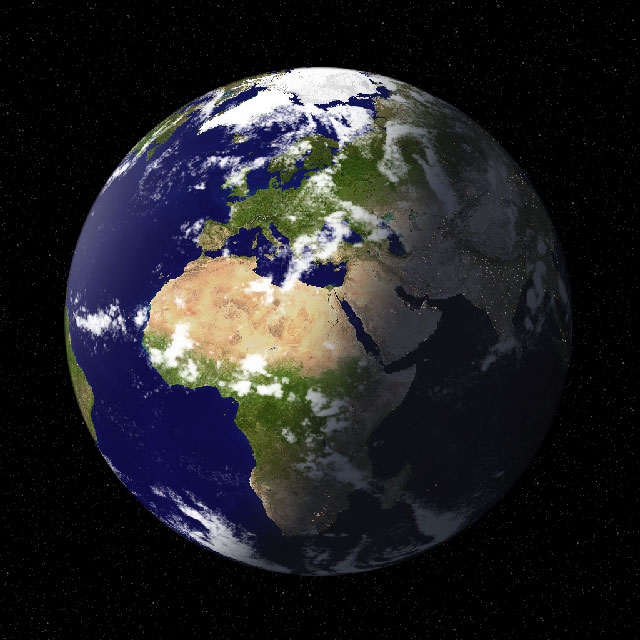

DESCOBRINDO O UNIVERSO
Tópicos mais acessados
Últimas notícias
Planeta Terra é bombardeado por erupção solar inédita em quatro anos
Publicado quinta-feira, 8 de julho de 2021 as 14:16
A mudança ocorre no ponto mais fraco, depois da qual o campo magnético é elevado a um ponto máximo. No entanto, devido a que nem todos os máximos solares são iguais, não fica claro o quão intenso será o próximo período.
Hubble: Nasa identifica procedimento que pode salvar o telescópio
Nasa registra maior explosão solar desde 2017
Elon Musk quer transformar nave espacial em telescópio
01 de julho de 2021
18 de maio de 2021
27 de junho de 2021
LEMBRETES
Hoje – Conjunção entre Lua, Marte e Urano. Ademais, pode ser visto comtelescópio ou binóculos.
CALENDÁRIO
Conjunção entre Lua, Mercúrio, Júpiter e Saturno.
Aproximação entre Marte, Urano e a Lua.
Oposição do Asteroide 4 Vesta.
01 de julho de 2021
18 de maio de 2021
27 de junho de 2021